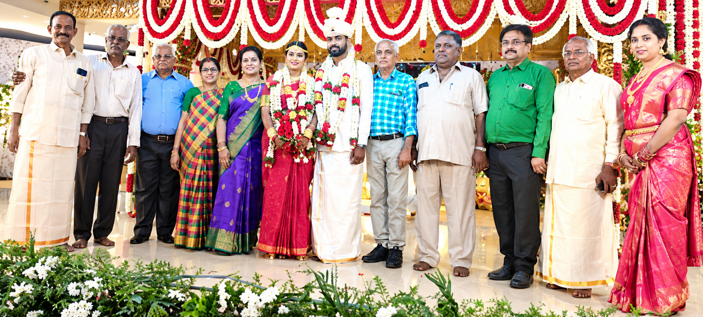

Wedding Celebration in Dr. A. Subramanian’s Family
Dr. A. Subramanian
Dr. A. Subramanian and family celebrated the marriage of his son, Mr. S. Harish, B.E., M.S. (Sweden), with Ms. S. Sowmya, B.Arch, on Thursday, 30 April 2026, at Arulmigu Kapaleeswarar Karpagambai Thirumana Mandapam, R.A. Puram, Chennai.
The wedding was solemnised in the presence of family members, relatives and well-wishers, marking a joyous milestone for both families.
TTPA extends its warm congratulations to Dr. A. Subramanian and his family and conveys its heartfelt blessings to the newly married couple, wishing them a happy and harmonious married life.
